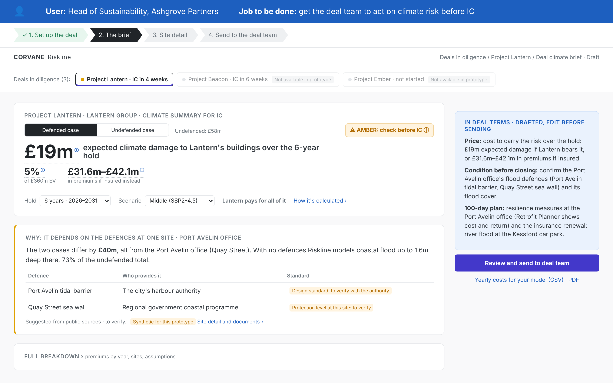

Product workflow
How I go from a customer's ask to a tested, working prototype with Claude Code, custom skills and MCP. This is the prototype the workflow produced for a worked example.
Fictional example. Corvane, Riskline, Ashgrove Partners and Project Lantern are invented; all data is synthetic.
Open the prototype See the skills on GitHub